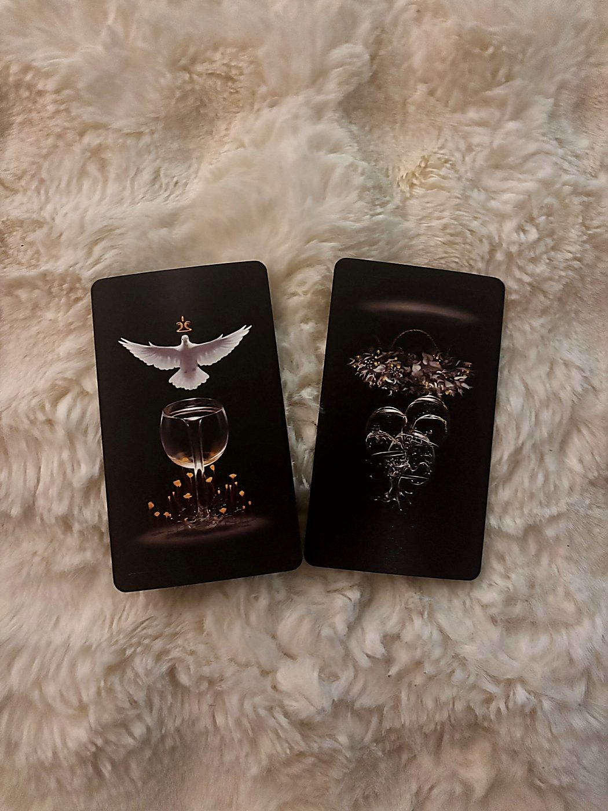
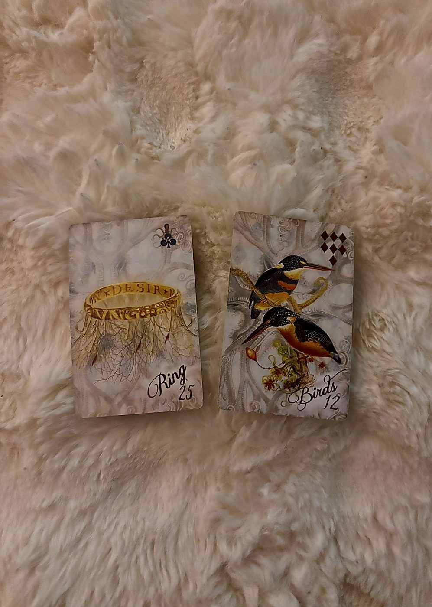
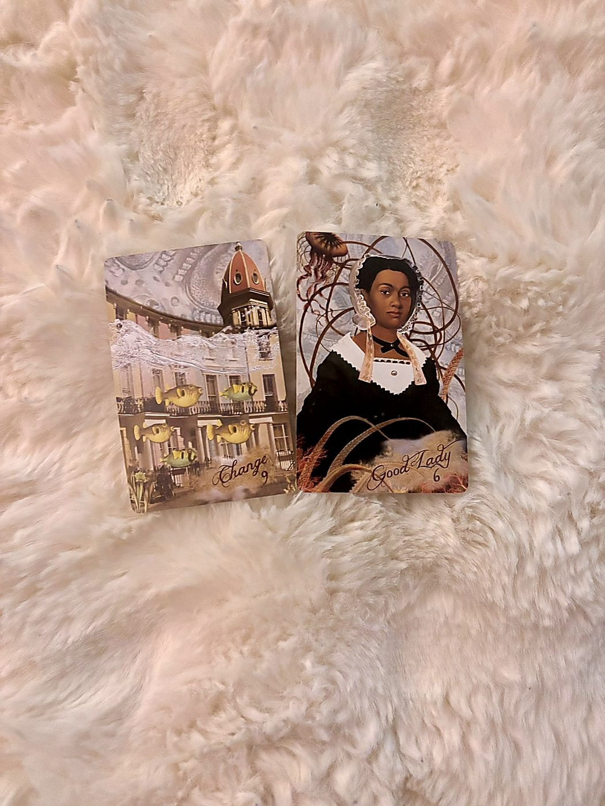
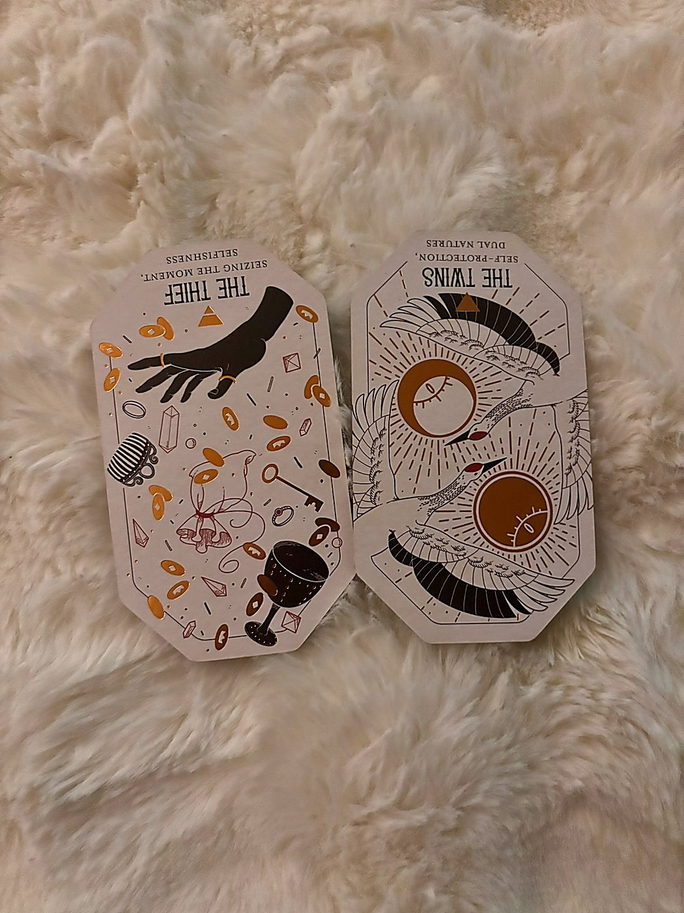
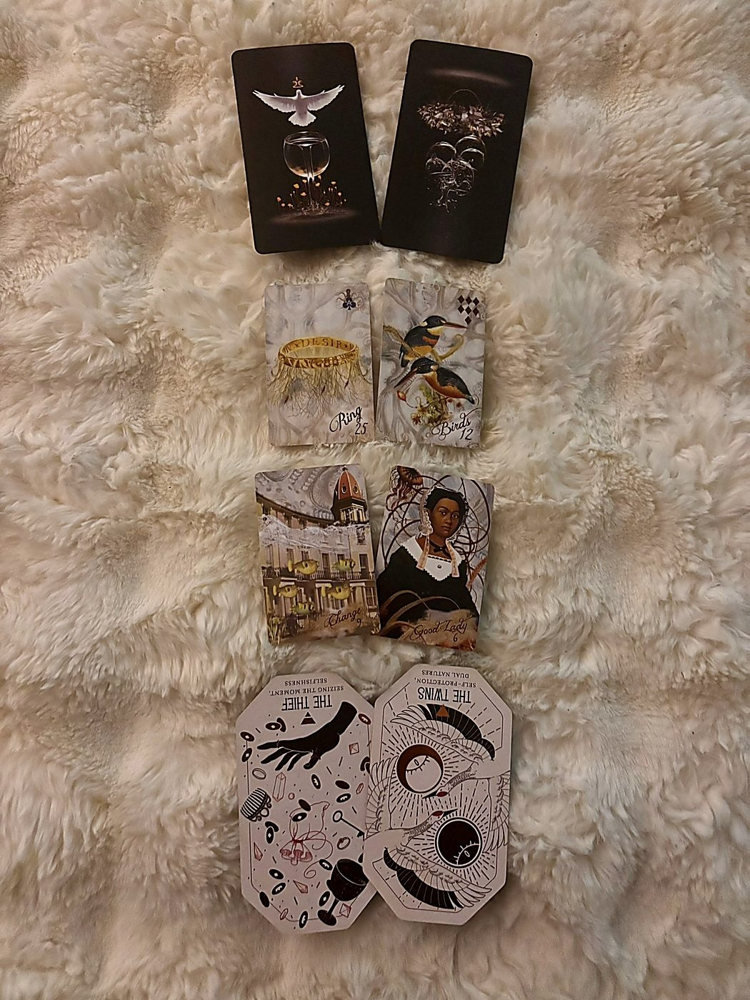

The Tarot Mirror
positions 1 + 5 · trueblack tarot · the theme and the soul lesson

A Cup Held Out in the Dark
Before we get into this card, Natalie, I want to introduce the deck it came from. TrueBlack Tarot is unlike most tarot you've probably encountered. Every card is printed on deep matte black stock, and the figures emerge from that darkness in white, gold, and red. Arthur Wang hand-painted each image from real human models. It reads darker and more contemplative than standard Rider-Waite-based decks, less prescriptive, more psychological. It doesn't hand you instructions. It sits you in front of something and asks you to stay with it. For a month-ahead reading like this, where we're looking at undercurrents and growth edges, it's exactly the right register.
Your theme for May is the Ace of Cups.
In TrueBlack, this card emerges from total blackness. A single vessel, luminous, overflowing. There is no landscape, no context, no person holding it. Just the cup, and what pours from it. It's the rawest form of emotional beginning: love, intuition, creative feeling, spiritual receptivity, all offered before you've decided what to do with any of it. The Ace of Cups doesn't arrive because you earned it or planned for it. It arrives because something in you has finally made space.
This is your May. An emotional opening. Something filling a container you may not have realized was empty, or one you'd been deliberately keeping dry. Given that this reading was channeled alongside Melanie Martinez's "Tunnel Vision," there's a quality here of finally looking up from the singular fixation and finding that feeling is flooding in from a direction you weren't watching. The tunnel narrows your sight. The Ace of Cups is what's been waiting in your peripheral vision the whole time.
With the Full Moon in Scorpio on May 1st squaring Pluto, this emotional opening is not casual. It's deep water. It may involve confronting something you'd buried in order to feel anything new at all. But the Ace says: the cup is already full. The offering has already arrived. May's question isn't whether you'll receive it, it's whether you'll let yourself drink.
The month's real subject is not an event. It's a feeling you're being asked to let in.
The Celebration You're Not Sure You Belong At
The Three of Cups Reversed as your soul lesson is a fascinating and slightly uncomfortable mirror to that Ace.
Upright, the Three of Cups is communion. Joy shared. The clink of glasses, the laughter of people who are genuinely glad to be in each other's presence. Reversed in TrueBlack, those figures recede back into the dark. The gathering is still happening, but you're not quite in it. Maybe you pulled away. Maybe you weren't sure you were wanted. Maybe the celebration feels like it belongs to someone else's version of you.
Here's the soul lesson May is offering: the Ace of Cups fills your cup individually, but the Three of Cups Reversed asks you to examine why you struggle to share that fullness with others, or to receive theirs. This might look like social withdrawal that feels protective but has become isolating. It might be a pattern of keeping celebrations at arm's length because you don't trust the joy, or because you've been burned by groups before. It could even be about a specific friendship or social circle where the dynamic has shifted and you're not sure where you stand anymore.
The growth edge is not "go be social" or "force yourself to celebrate." It's subtler. It's about noticing where your tunnel vision, that Melanie Martinez thread, has narrowed your emotional world to a single point of focus, and in doing so has cost you the peripheral connections that actually nourish you. The lesson is learning to hold the cup the Ace gives you and then look around for who you might pour for, and who might pour for you.
You are learning the difference between solitude that protects and solitude that starves.
When the Ace and Three of the same suit appear together in a reading, the suit's element is the entire field of play. Cups is water: emotion, intuition, relationship, the inner life. The Ace is the seed, the Three is an early expression of that seed in community. Reversed, the Three suggests the seed is present but the communal expression is blocked or distorted. The soul work is in that gap: you have the feeling, but something prevents you from letting it circulate.
The Lenormand Line
positions 3 + 7 · sirens' song lenormand · what's releasing and the invitation

The Circle Comes Undone
What's leaving you this month is the Ring (25).
In Lenormand, the Ring is commitment, cycles, agreements, contracts, and the ongoing. It's anything that loops: a relationship pattern, a promise, a recurring obligation, an identity you've been bound to. When the Ring appears in a releasing position, something that has been continuous is completing. A cycle closes. An agreement, formal or unspoken, reaches its end.
This doesn't necessarily mean a dramatic breakup or contract termination, though it could. The Ring releasing can also mean you're stepping out of a pattern you've been locked in, a loop of behavior, a repetitive emotional cycle, a commitment you've been honoring past its expiration date. Given the Ace of Cups as theme, what's releasing here feels like an old emotional contract. A way you've agreed to feel, or a role you've agreed to play in a relationship dynamic, is no longer binding.
The New Moon in Taurus on May 16th, with Uranus freshly in Gemini nearby, supports exactly this kind of break from what felt permanent. Taurus energy clings to what's stable, but Uranus says: the stability was actually stagnation. Let the ring slip off.
You are being released from a loop. The question is whether you'll walk out of it or keep circling the track by habit.
The Sound of Other Voices
The gift the universe is extending toward you this month is Birds (12).
Birds in Lenormand is communication, conversation, the buzz of social exchange, a couple dynamic, phone calls, meetings, and sometimes anxiety or nervous chatter. As an invitation, though, this is the universe saying: talk. Speak. Let the words out, and let other people's words in. The Birds card often represents the kind of communication that's alive, not formal or written, but spoken. Dialogue, discussion, the messy wonderful back-and-forth of actually being in conversation with another person.
Paired with the Ring in the releasing position, there's a beautiful mechanism here. The Ring, the closed loop, the silent contract, is what's leaving. The Birds, the open exchange, the voice finding its way to someone who can hear it, is what's arriving. May is trading silence for sound. The commitment that kept things locked is giving way to the communication that lets things breathe.
This could be a specific invitation to a gathering or conversation that matters. Birds can indicate a significant phone call, a meeting that changes something, or simply the return of social energy after a period of withdrawal. Given the Three of Cups Reversed in the soul lesson, the Birds invitation feels like a direct answer: the growth comes through letting yourself be in dialogue again, even if it's uncomfortable, even if the chatter makes you anxious.
The gift is a conversation. Not a monologue. Not a text. A real exchange of living sound between you and someone else.
When we read two Lenormand cards across positions in a spread like this, the releasing card tells us what's flowing out and the invitation card tells us what's flowing in. Ring → Birds reads as: closed agreements are being replaced by open communication. The last card in a Lenormand pair carries the weight of the conclusion, and here that's Birds. The month lands on talking, not on binding. On exchange, not on obligation.
The Kipper Undercurrent
positions 4 + 8 · sirens' song kipper · the hidden current and the blue moon message

Already in Motion
Beneath everything visible this month, Change (9) is operating.
In the Siren's Song Kipper deck, Change is a Movement card. Its energy flows from left to right, which in Kipper directional logic means it's moving from the past toward the future, from what was toward what will be. This isn't a card that asks whether change is coming. It tells you change is already underway. The shift has begun. The hidden current of May is transition itself.
What makes this significant in Position 4 is that it's the undercurrent, the thing operating beneath what you can see. You might not feel the ground moving yet. You might still think things are stable, or that you're just thinking about making a decision. But Change as a Movement card in the hidden position says: the relocation, the shift, the transition, it's not pending. It's already happening inside you, even if the external circumstances haven't caught up.
This resonates powerfully with the Ring releasing in the Lenormand. The cycle is ending because the movement has already started. You're not deciding whether to leave the loop. You're already walking, and May is when you realize your feet have been moving for a while.
With Pluto stationing retrograde on May 6th, the hidden current of change takes on an even deeper tone. This is structural, not cosmetic. Something fundamental about how you hold power, or how you define security, is rearranging itself beneath the surface.
You are not approaching a crossroads. You already chose a direction. May is when you notice.
Kipper Movement cards tell us not just that something is happening but the direction of its energy. Change (9) moves left to right. In a reading for a female querent (Main Female faces RIGHT), left-to-right movement means the change is flowing toward her. It's not something she's chasing. It's arriving. The hidden current is bringing the shift to her, not asking her to go get it.
The Woman at the End of the Road
May closes with The Good Lady (6).
In Siren's Song, the Good Lady is a Stop card: an established, older or mature female figure, a mentor, matriarch, someone of influence and substance. She's not the Main Female (that would be Natalie herself). She's someone else, a woman who carries authority, care, and real-world wisdom. In traditional Kipper, this is often a mother, an aunt, a boss, a therapist, a woman who has lived enough to know things.
As the Blue Moon Message, the note May ends on, this is extraordinary. The Blue Moon in Sagittarius on May 31st is about expansion, seeing the bigger picture, the harvest of everything the month has stirred. And what you carry into June is the energy of this woman, either her literal presence in your life or the version of her qualities that you are stepping into yourself.
Given the soul lesson of the Three of Cups Reversed, which asks you to examine your relationship to community and shared joy, the Good Lady arriving at the end of the month feels like an answer. She may be someone who models what it looks like to hold authority and warmth simultaneously, to be powerful without being isolated. She might be a friend who is older or more established, reaching out. Or she may be the version of you that emerges after the Ring releases and the Change finishes its work: a woman who has stopped circling old patterns and is standing firmly in her own experience.
By the end of May, a woman who knows things will be standing in your story. She may be someone you meet, someone who returns, or the person you're becoming.
The Good Lady is a Stop card, meaning energy rests here. As the final position in the spread, a Stop card is especially significant: it says the month lands somewhere solid. No more movement, no more transition. After the Change card's left-to-right flow through the month, the Good Lady is where the energy comes to rest. She's the destination. Also worth noting for Kipper person-card logic: when a non-significator person card appears, we look for who it represents. The Good Lady paired with Change suggests someone whose influence helps Natalie navigate or complete the transition. Watch for her.
The Citadel Oracle
positions 2 + 6 · the citadel oracle · what's emerging and the warning

What You Took Back Without Noticing
A crash of pottery; the sound of angry voices; someone laughs -- another curses. You are so distracted looking to see what is going on that you do not realise your pockets are suddenly empty. The Thief takes what they want, when they want it. It started off as a necessity, but now it is an addiction -- a need to take greater risks, to seek bigger marks. One day they will run out of luck, but it is the thrill that keeps them going in the meantime.
REVERSED: For whatever reason, you have found yourself in a situation where you are hoarding resources for some unseen future disaster. Material wealth, favours, even friendships -- you are holding on to everything with an iron fist. You should also let yourself enjoy some of what you have been holding onto, rather than saving it all for a rainy day.
— The Citadel Oracle
The Thief Reversed as what's emerging into your awareness is sharp and honest. In the Citadel system, reversal doesn't negate the card's energy. It shows the shadow or excess of it. Upright, the Thief reclaims what was taken. Reversed, the Thief hoards. What's entering your awareness this month is a recognition of how tightly you've been holding on.
This isn't just about money or material resources, though it could include that. The guidebook names it explicitly: material wealth, favours, even friendships. You've been gripping. Saving everything for the worst-case scenario, rationing your energy, your time, your affection, your trust, as if any expenditure now would leave you bankrupt when disaster eventually arrives. May is when you start to see that pattern clearly, perhaps for the first time.
The emerging quality here is awareness itself. The Thief Reversed isn't a new behavior arriving in May; it's an old behavior finally becoming visible. You've been doing this. You've been holding your resources, your emotional availability, your willingness to invest in connection, behind a locked door. And now, with the Ace of Cups pouring over and the Ring releasing, you're starting to notice the door. You're starting to ask why it's locked.
The Scorpio Full Moon at the start of the month, squaring Pluto, is exactly the energy that illuminates hoarding patterns. Scorpio knows about holding on. It knows about keeping things buried because the surface feels too dangerous. But the full moon makes what was hidden visible, and the Thief Reversed stepping into the light is May's first real gift: seeing what you've been clutching so you can decide whether to keep gripping or finally open your hands.
What's emerging isn't a new problem. It's the first clear look at an old one. You've been saving everything for a storm that may never come.
The War Between Your Two Selves
A quiet courtyard, the soft murmur of a nearby teashop, the call of songbirds -- and a blazing argument, shattering the peace. The Twins were born at the same time, but they could not be more different: the first, a dreamer, charming and surrounded by friends -- the other more worldly, dogged by life's injustices and feelings of inadequacy. Each twin feels the pressure to measure up to their sibling, but that pressure is entirely internal. Neither is judging the other -- only themselves.
REVERSED: Reversed, the relationship is not with another but with yourself. What was in balance is now off-kilter. The two sides of balance are making it hard to make decisions, or perhaps you are struggling to balance periods of manic productivity with sluggish demotivation. It is time to bring your energy back into balance and work out a happy medium.
— The Citadel Oracle
The Twins Reversed as the warning is the card I'd most want you to sit with this month, Natalie.
Reversed, the Twins turn inward. The conflict isn't between you and another person. It's between the two versions of yourself that can't agree on who you're supposed to be. One side opens, feels, receives the Ace of Cups, wants to participate in the celebration of the Three. The other side contracts, hoards like the Thief Reversed, keeps the tunnel vision narrow, stays safe in the loop the Ring represents. These two aren't fighting because one is wrong. They're fighting because they're both trying to protect you, and their methods are incompatible.
The warning is specific: this internal split, if unexamined, will make it very difficult to act on anything May offers. You'll swing between wanting connection and retreating from it. Between opening your hands and clenching them shut again. Between the manic productivity the guidebook names and the sluggish demotivation that follows. The oscillation itself becomes the trap.
The mechanism the Twins Reversed describes, periods of intensity followed by collapse, maps directly onto the Pluto retrograde transit beginning May 6th. Pluto retrograde in Aquarius stirs up questions of personal power and authenticity, and when it meets an already-divided internal landscape, it can amplify the pendulum. The warning is not "don't change." The warning is: don't let the inner argument about change consume all the energy that should be going toward actually living through it.
The danger isn't choosing wrong. It's being so caught between your two selves that you don't choose at all.
When the Citadel Oracle places two reversed cards across the emerging and warning positions, it's telling us that the shadow material is the story of the month. The Thief Reversed (hoarding) and the Twins Reversed (internal split) are working the same territory from two angles. One says: you're holding too tight. The other says: and you can't decide whether to let go because two parts of you disagree. The shadow is the through-line. This is a month of confronting what you do when you're afraid, and choosing differently.
✦ The Weave
synthesis · all eight positions · may 2026

Tunnel Vision Breaks Open
Here is what May is doing to you, Natalie, and I mean that in the most compassionate way possible.
You've been in a tunnel. Melanie Martinez wasn't a random channel. The song is about fixation so total it becomes its own world, and somewhere in the last few months you built exactly that: a closed loop, the Ring, where your focus narrowed to a single point and everything outside it went soft and distant. It may have felt necessary. It may have been a relationship, a project, a coping mechanism, a grief, a goal so consuming that looking away felt like losing it. But the cost has been high. You've been hoarding your resources, your energy, your emotional availability, holding everything in reserve like the Thief Reversed, afraid that if you spent any of it on something outside the tunnel, there wouldn't be enough left for whatever you were protecting.
May breaks this open. Not violently, but irrevocably.
The Ace of Cups says the emotional opening has already arrived. It's not something you need to manufacture. The cup is full. The water is rising. The Scorpio Full Moon on May 1st makes sure you feel it, deeply and without the option of pretending you don't. And the Change card in the hidden current confirms that the shift isn't approaching. It's already in motion, flowing left to right, moving toward you whether or not you've consciously agreed to it. Your feet have been walking for a while. May is when you look down and see them moving.
What's releasing is the Ring: the cycle, the commitment, the loop. This could be a literal agreement or relationship reaching its natural end, or it could be the more subtle release of a behavioral pattern, a way you've agreed to be, a role you've been playing on repeat. The New Moon in Taurus on May 16th, with Uranus now in Gemini shaking the ground nearby, provides the structural break. What felt permanent reveals itself as something you can step out of.
But here's where the month gets honest with you, and where the work lives.
The Three of Cups Reversed as your soul lesson and the Twins Reversed as your warning are speaking the same truth from two angles. Part of you wants to open. Part of you wants to stay in the tunnel where it's safe and singular and you don't have to risk the vulnerability of being in community, of celebrating with others, of admitting you need people. The Twins Reversed says these two parts of you are at war, and if you let the war consume your energy, you'll end up paralyzed, swinging between expansion and contraction, between manic bursts and collapsed withdrawal, never fully arriving in either state.
The invitation is the Birds: talk. Speak out loud. Let someone hear you, and hear them back. This is not a month for journaling alone in your room, though that has its place. The Birds are about dialogue. The messy, imperfect, sometimes anxious act of being in conversation with another person. The Ring's closed loop is replaced by the Birds' open exchange. Silence becomes sound. Commitment becomes communication. The tunnel becomes a room with other people in it.
And the month ends with The Good Lady. A mature, established woman of influence and care. She may appear literally: a mentor, a therapist, an older friend, a mother figure, someone who shows you what it looks like to hold power without isolation, to be strong and still be connected. Or she may be the version of you that's waiting on the other side of this month's work. The woman you become when you stop hoarding, stop circling, stop splitting yourself in two, and simply stand in the fullness of what you feel.
The Blue Moon in Sagittarius on May 31st is a rare double harvest. It says: you will see the bigger picture. The expansion Sagittarius offers isn't about adding more. It's about seeing how much was always there, just outside the tunnel's narrow frame.
May asks you to do one hard, simple thing: open your hands, open your mouth, and let the cup overflow toward someone other than yourself. The feeling is already here. The change is already moving. The old loop is already releasing. All that's left is for you to let it happen, and to let yourself be seen while it does.
The tunnel kept you focused. It also kept you alone. May is the month you step out of it, blinking in the light, and find that the world has been waiting for you with a cup already poured.